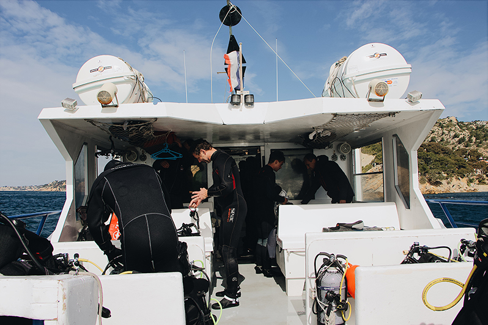

Unique Raters
{{ raters }}
Ratings Submitted
{{ ratings }}
Unique Raters: {{ raters }}
Ratings Submitted: {{ ratings }}
Our team works with ultrasound technologies and is experimenting with AI to personalize decompression procedures for divers. Ultrasound imaging can be used to observe nitrogen bubbles circulating in the body after a dive, which can sometimes result in decompression sickness. These bubbles are a marker of decompression stress and can help us understand someone’s individual susceptibility to decompression sickness. By using AI to locate these bubbles, it will allow us to study how the amount of bubbles vary for multiple hours post dive. If you have any questions or would like to collaborate, please email contact@decobubbles.com.
To build and train an AI to locate bubbles, it requires a large database of rated post-dive ultrasound videos, many more than our team can produce alone. That is why we are asking for volunteers to help build this database with us. We have developed this website so volunteers from around the world can come together and aid us in this first of its kind crowdsourcing campaign.
Meet The Team
Collaborators